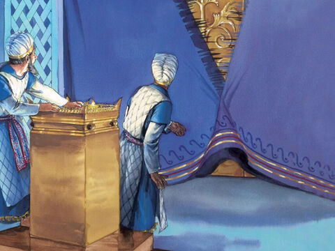
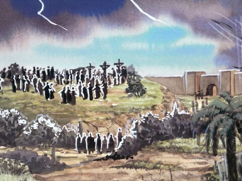
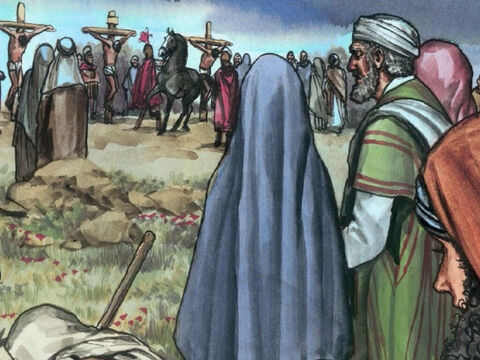
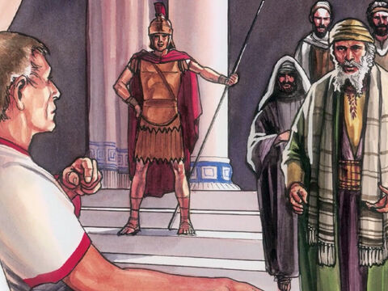
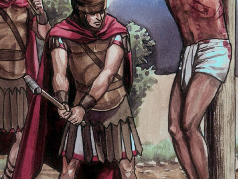
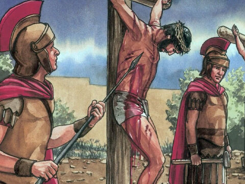

The Death Of Lord Jesus
Now from the sixth hour there was darkness over all the land unto the ninth hour.
And about the ninth hour Jesus cried with a loud voice, saying, Eli, Eli, lama sabachthani? that is to say, My God, my God, why hast thou forsaken me?
Some of them that stood there, when they heard that, said, This man calleth for Elias.
Matthew 27:45-47
After this, Jesus knowing that all things were now accomplished, that the scripture might be fulfilled, saith, I thirst.
Now there was set a vessel full of vinegar: and they filled a spunge with vinegar, and put it upon hyssop, and put it to his mouth.
When Jesus therefore had received the vinegar, he said, It is finished: and he bowed his head, and gave up the ghost.
John 19:28-30
And, behold, the veil of the temple was rent in twain from the top to the bottom; and the earth did quake, and the rocks rent;
And the graves were opened; and many bodies of the saints which slept arose,
And came out of the graves after his resurrection, and went into the holy city, and appeared unto many.
Now when the centurion, and they that were with him, watching Jesus, saw the earthquake, and those things that were done, they feared greatly, saying, Truly this was the Son of God.
And many women were there beholding afar off, which followed Jesus from Galilee, ministering unto him:
Among which was Mary Magdalene, and Mary the mother of James and Joses, and the mother of Zebedees children.
Matthew 27:51-56
The Jews therefore, because it was the preparation, that the bodies should not remain upon the cross on the sabbath day, (for that sabbath day was an high day,) besought Pilate that their legs might be broken, and that they might be taken away.
Then came the soldiers, and brake the legs of the first, and of the other which was crucified with him.
But when they came to Jesus, and saw that he was dead already, they brake not his legs:
But one of the soldiers with a spear pierced his side, and forthwith came there out blood and water.
And he that saw it bare record, and his record is true: and he knoweth that he saith true, that ye might believe.
For these things were done, that the scripture should be fulfilled, A bone of him shall not be broken.
And again another scripture saith, They shall look on him whom they pierced.
John 19:31-37
- 
- 
- 
- 
- 
- 